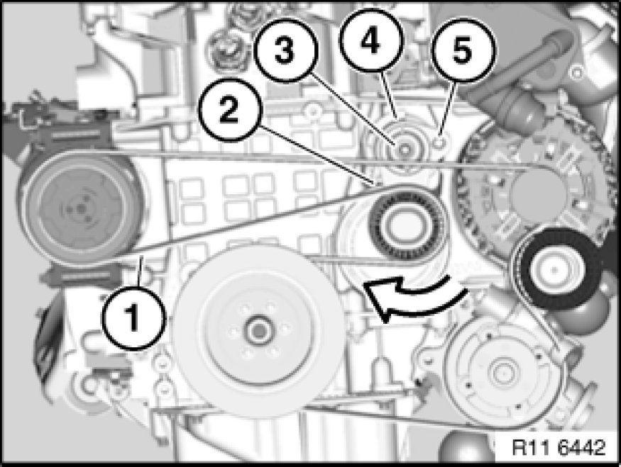
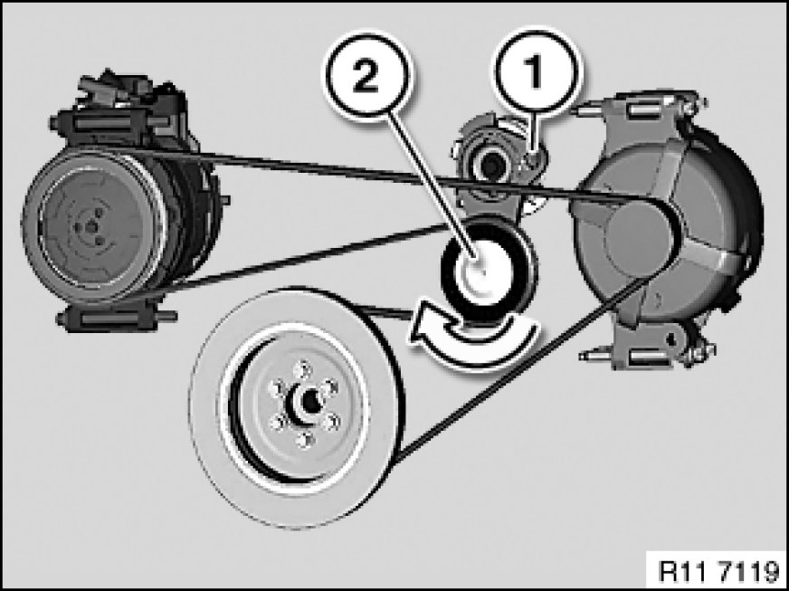

Drive Belt Tensioner: Service and Repair
11 28 020 - Replacing tensioning device for alternator drive belt (N52K)

Special tools required:
- 11 3 340

Important!
Aluminium-magnesium materials.
No steel screws/bolts may be used due to the threat of electrochemical corrosion.
A magnesium crankcase requires aluminium screws/bolts exclusively.
Aluminium screws/bolts must be replaced each time they are released.
Aluminium screws/bolts are permitted with and without
color coding (blue).
For reliable identification:
Aluminium screws/bolts are not magnetic.
Jointing torque and angle of rotation must be observed without fail (risk of damage).

Necessary preliminary tasks:
- Remove drive belt

E9x only:
Remove special tool 11 3 340.
Release screw (3) on belt tensioner (4).
Tightening torque 11 28 1AZ 11 28 Ribbed V-Belt with Tension and Deflection System.
Installation Note:
Replace aluminium screws.
Remove belt tensioner (4).

E85, E89 only:
Remove special tool 11 3 340.
Release screw on belt tensioner (1).
Tightening torque 11 28 1AZ 11 28 Ribbed V-Belt with Tension and Deflection System.
Installation Note:
Replace aluminium screws.
Remove belt tensioner (1).

Assemble engine.